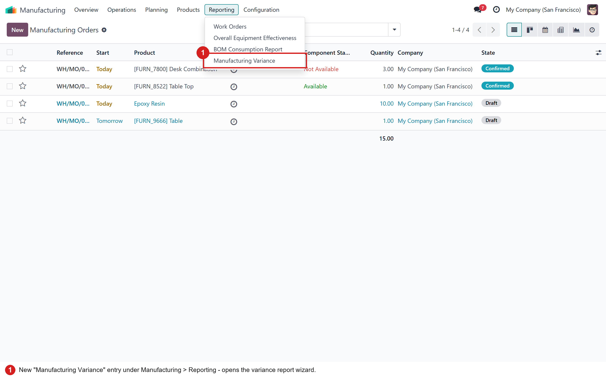
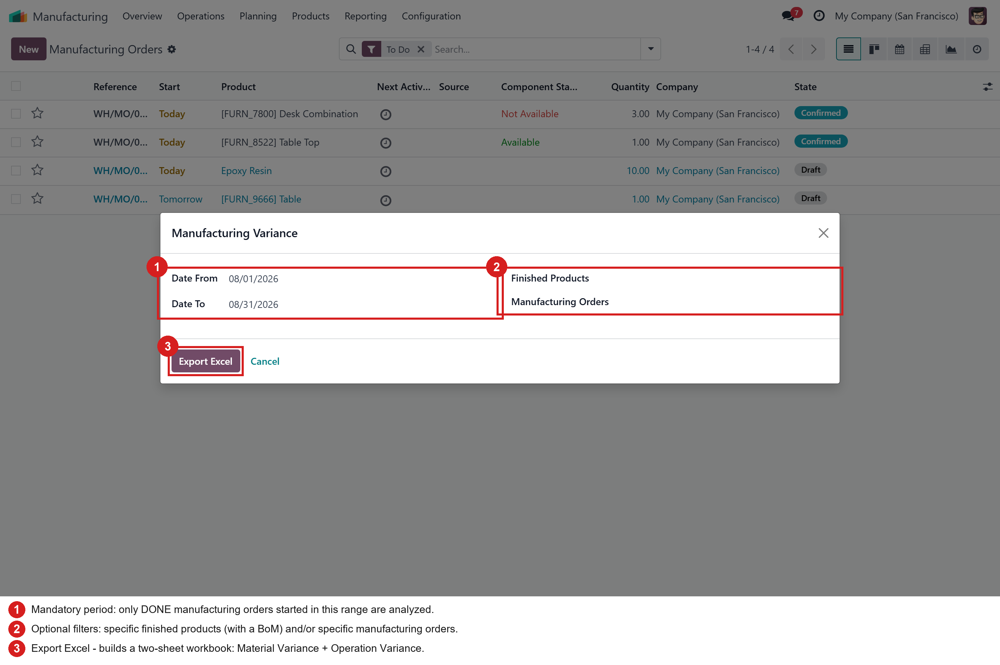
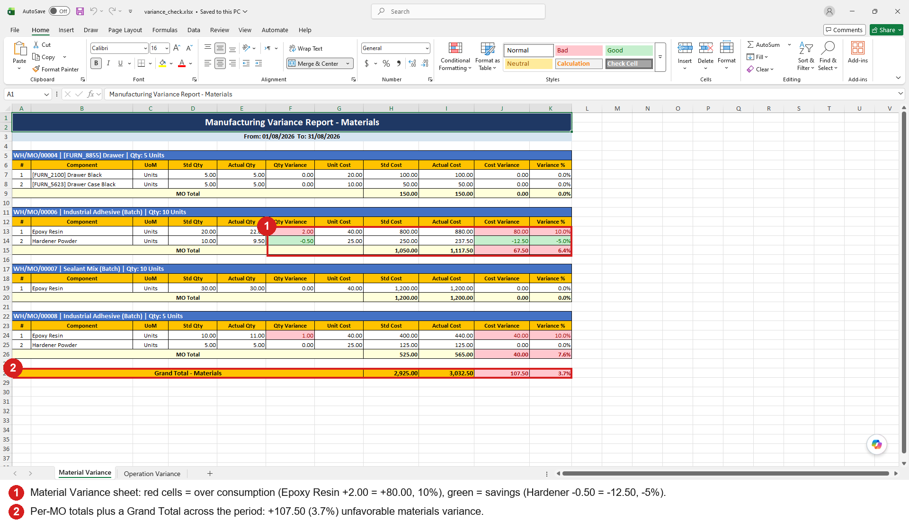
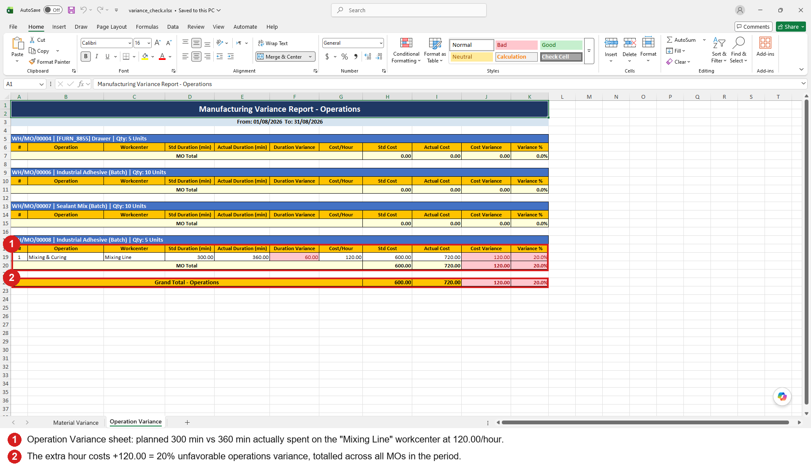

Classic standard vs actual cost-accounting variance analysis for your Manufacturing Orders — on one Excel workbook with two sheets: Materials (planned vs consumed quantities × unit cost) and Operations (expected vs real work-center time × hourly rate).
A new Manufacturing Variance entry is added under Manufacturing > Reporting.

Pick the date range to analyze — only done manufacturing orders are included, so the comparison is always against final consumption. Optionally restrict the report to specific finished products or specific MOs, then hit Export Excel.

One section per MO. Each component line compares the standard quantity (BoM demand) with the actual quantity consumed, values both at the product's standard cost and highlights the variance: red = unfavorable (over consumption), green = favorable (savings) — with MO totals and a grand total for the whole period.

The same analysis for work-center time: every finished work order compares the expected duration with the real duration recorded on the shop floor and costs both at the work order's hourly rate (falling back to the work center's rate). An extra hour on the line immediately shows up as an unfavorable cost variance.
